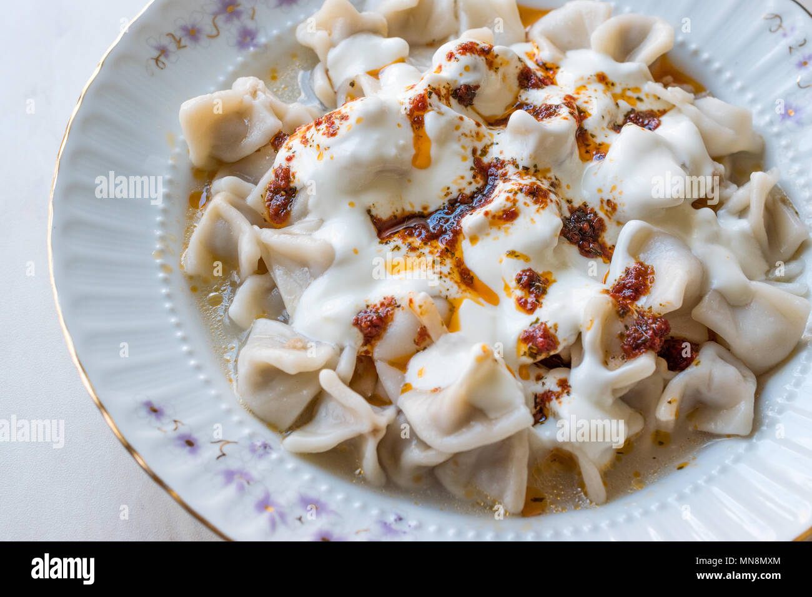

Manti

Description
Mantı sind kleine mit Hackfleisch oder Linsen gefüllte Teigtaschen.
Ingredients
- 300g Hackfleisch
- 1 Zwiebel
- 1 TL Paprikapulver
- 150ml Wasser
- 400g Mehl
- 1 Ei
- 200g Butter
Steps
- Zubereitung Manti-Teig: Mehl, Wasser Ei und Salz in deiner
Küchenmaschine oder von Hand zu einem recht festen Nudelteig kneten.
Abgedeckt mit einem sauberen Küchentuch für 30 Minuten an einem warmen
Ort gehen lassen. In der Zwischenzeit bereiten wir die Füllung vor.
- Den Teig auf einer bemehlten Arbeitsfläche so dünn wie möglich ausrollen.
Dann den Teig mit einem Pizzaschneider oder Messer in 3cm große Quadrate
schneiden. Auf jedes Quadrat 1/4 TL der Hackfleisch-Füllung geben. Und die
Manti so verschließen wie Du es magst.
- Wir machen hier nicht die tradionelle Form, wo man alle 4 Ecken
verschließt und es sieht dann aus wie ein Dumpling. Nein, es wird schon
schwer genug, den Teig super dünn auszurollen und es soll einfach nicht zu
schwer sein. Das Befüllen macht ihr so lange bis kein Teig und / oder
Füllung mehr übrig ist.